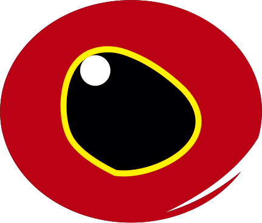

Portal de Solicitações

Siga as instruções abaixo
↓↓↓
1. Selecione "mais opções" 
2. Clique em "Compartilhar" 
3. Em seguida, "adicionar à tela inicial" 
4. Salve com a opção
"Abrir como app web" ativada